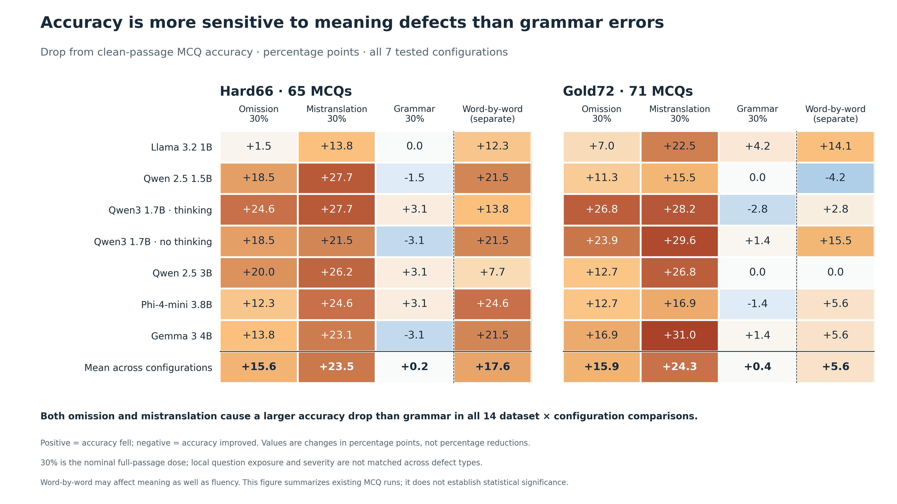

Saved evaluations, 29 October 2026. No new model inference or grading.

PNG chart · Editable SVG · All counts, rates and provenance (JSON)
| Condition | Hard66 accuracy | Hard66 drop (pp) | Hard66 correct/total | Gold72 accuracy | Gold72 drop (pp) | Gold72 correct/total |
|---|---|---|---|---|---|---|
| Clean | 75.8% | +0.0 | 345/455 | 86.3% | +0.0 | 429/497 |
| Omission 15% | 66.8% | +9.0 | 304/455 | 76.9% | +9.5 | 382/497 |
| Omission 30% | 60.2% | +15.6 | 274/455 | 70.4% | +15.9 | 350/497 |
| Mistranslation 15% | 63.5% | +12.3 | 289/455 | 76.7% | +9.7 | 381/497 |
| Mistranslation 30% | 52.3% | +23.5 | 238/455 | 62.0% | +24.3 | 308/497 |
| Grammar 30% | 75.6% | +0.2 | 344/455 | 85.9% | +0.4 | 427/497 |
| Google word-by-word | 58.2% | +17.6 | 265/455 | 80.7% | +5.6 | 401/497 |
Totals repeat the same question set across seven configurations; they do not represent 455 or 497 independent questions.
| Model | Clean | Omission 15% | Omission 30% | Mistranslation 15% | Mistranslation 30% | Grammar 30% | Google word-by-word |
|---|---|---|---|---|---|---|---|
| Llama 3.2 1B | 30/65 (46.2%) | 32/65 (49.2%) | 29/65 (44.6%) | 26/65 (40.0%) | 21/65 (32.3%) | 30/65 (46.2%) | 22/65 (33.8%) |
| Qwen 2.5 1.5B | 56/65 (86.2%) | 47/65 (72.3%) | 44/65 (67.7%) | 49/65 (75.4%) | 38/65 (58.5%) | 57/65 (87.7%) | 42/65 (64.6%) |
| Qwen3 1.7B · thinking | 51/65 (78.5%) | 45/65 (69.2%) | 35/65 (53.8%) | 45/65 (69.2%) | 33/65 (50.8%) | 49/65 (75.4%) | 42/65 (64.6%) |
| Qwen3 1.7B · no thinking | 48/65 (73.8%) | 43/65 (66.2%) | 36/65 (55.4%) | 39/65 (60.0%) | 34/65 (52.3%) | 50/65 (76.9%) | 34/65 (52.3%) |
| Qwen 2.5 3B | 55/65 (84.6%) | 45/65 (69.2%) | 42/65 (64.6%) | 43/65 (66.2%) | 38/65 (58.5%) | 53/65 (81.5%) | 50/65 (76.9%) |
| Phi-4-mini 3.8B | 55/65 (84.6%) | 50/65 (76.9%) | 47/65 (72.3%) | 48/65 (73.8%) | 39/65 (60.0%) | 53/65 (81.5%) | 39/65 (60.0%) |
| Gemma 3 4B | 50/65 (76.9%) | 42/65 (64.6%) | 41/65 (63.1%) | 39/65 (60.0%) | 35/65 (53.8%) | 52/65 (80.0%) | 36/65 (55.4%) |
| Model | Clean | Omission 15% | Omission 30% | Mistranslation 15% | Mistranslation 30% | Grammar 30% | Google word-by-word |
|---|---|---|---|---|---|---|---|
| Llama 3.2 1B | 42/71 (59.2%) | 36/71 (50.7%) | 37/71 (52.1%) | 36/71 (50.7%) | 26/71 (36.6%) | 39/71 (54.9%) | 32/71 (45.1%) |
| Qwen 2.5 1.5B | 64/71 (90.1%) | 61/71 (85.9%) | 56/71 (78.9%) | 58/71 (81.7%) | 53/71 (74.6%) | 64/71 (90.1%) | 67/71 (94.4%) |
| Qwen3 1.7B · thinking | 63/71 (88.7%) | 51/71 (71.8%) | 44/71 (62.0%) | 58/71 (81.7%) | 43/71 (60.6%) | 65/71 (91.5%) | 61/71 (85.9%) |
| Qwen3 1.7B · no thinking | 63/71 (88.7%) | 55/71 (77.5%) | 46/71 (64.8%) | 53/71 (74.6%) | 42/71 (59.2%) | 62/71 (87.3%) | 52/71 (73.2%) |
| Qwen 2.5 3B | 67/71 (94.4%) | 62/71 (87.3%) | 58/71 (81.7%) | 62/71 (87.3%) | 48/71 (67.6%) | 67/71 (94.4%) | 67/71 (94.4%) |
| Phi-4-mini 3.8B | 64/71 (90.1%) | 60/71 (84.5%) | 55/71 (77.5%) | 59/71 (83.1%) | 52/71 (73.2%) | 65/71 (91.5%) | 60/71 (84.5%) |
| Gemma 3 4B | 66/71 (93.0%) | 57/71 (80.3%) | 54/71 (76.1%) | 55/71 (77.5%) | 44/71 (62.0%) | 65/71 (91.5%) | 62/71 (87.3%) |
64 matched items per configuration. Full credit only is shown below; the JSON also includes partial-credit means.
| Model | Clean | Omission 30% | Mistranslation 30% | Grammar 30% | Word-by-word |
|---|---|---|---|---|---|
| Llama 3.2 1B | 14/64 (21.9%) | 16/64 (25.0%) | 14/64 (21.9%) | 19/64 (29.7%) | 18/64 (28.1%) |
| Qwen 2.5 1.5B | 38/64 (59.4%) | 32/64 (50.0%) | 22/64 (34.4%) | 40/64 (62.5%) | 26/64 (40.6%) |
| Qwen3 1.7B · thinking | 39/64 (60.9%) | 34/64 (53.1%) | 16/64 (25.0%) | 39/64 (60.9%) | 26/64 (40.6%) |
The pattern supports greater sensitivity to the tested adequacy defects than to the tested meaning-preserving grammar defects. It does not show insensitivity to every kind of fluency problem.